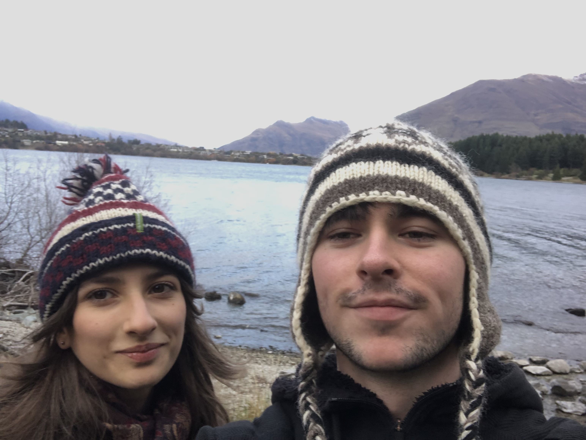

About Me

Ryan Martin
writer, developer, designer, student.
Welcome to my blog, where I uncover the hidden gems of Japan! From tranquil temples to secret hot springs, I explore off-the-beaten-path destinations that showcase the beauty and culture of Japan beyond the tourist hotspots. Whether you're a seasoned traveler or just curious about Japan, join me as I share unique experiences, travel tips, and stories from this incredible country.